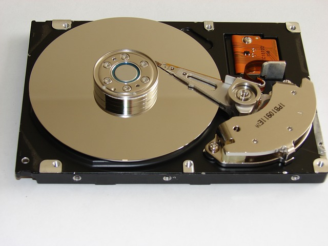

作者：@翁呀伟呀 授权本站转载
概论
所谓的持久化，就是将数据保存到硬盘中，使得在应用程序或机器重启后可以继续访问之前保存的数据。在iOS开发中，有很多数据持久化的方案，接下来我将尝试着介绍一下5种方案：
plist文件（属性列表）
preference（偏好设置）
NSKeyedArchiver（归档）
SQLite 3
CoreData
沙盒
在介绍各种存储方法之前，有必要说明以下沙盒机制。iOS程序默认情况下只能访问程序自己的目录，这个目录被称为“沙盒”。
1.结构
既然沙盒就是一个文件夹，那就看看里面有什么吧。沙盒的目录结构如下：
"应用程序包" Documents Library Caches Preferences tmp
2.目录特性
虽然沙盒中有这么多文件夹，但是没有文件夹都不尽相同，都有各自的特性。所以在选择存放目录时，一定要认真选择适合的目录。
"应用程序包": 这里面存放的是应用程序的源文件，包括资源文件和可执行文件。
NSString *path = [[NSBundle mainBundle] bundlePath]; NSLog(@"%@", path);
Documents: 最常用的目录，iTunes同步该应用时会同步此文件夹中的内容，适合存储重要数据。
NSString *path = NSSearchPathForDirectoriesInDomains(NSDocumentDirectory, NSUserDomainMask, YES).firstObject; NSLog(@"%@", path);
Library/Caches: iTunes不会同步此文件夹，适合存储体积大，不需要备份的非重要数据。
NSString *path = NSSearchPathForDirectoriesInDomains(NSCachesDirectory, NSUserDomainMask, YES).firstObject; NSLog(@"%@", path);
Library/Preferences: iTunes同步该应用时会同步此文件夹中的内容，通常保存应用的设置信息。
tmp: iTunes不会同步此文件夹，系统可能在应用没运行时就删除该目录下的文件，所以此目录适合保存应用中的一些临时文件，用完就删除。
NSString *path = NSTemporaryDirectory(); NSLog(@"%@", path);
plist文件
plist文件是将某些特定的类，通过XML文件的方式保存在目录中。
可以被序列化的类型只有如下几种：
NSArray; NSMutableArray; NSDictionary; NSMutableDictionary; NSData; NSMutableData; NSString; NSMutableString; NSNumber; NSDate;
1.获得文件路径
NSString *path = NSSearchPathForDirectoriesInDomains(NSDocumentDirectory, NSUserDomainMask, YES).firstObject; NSString *fileName = [path stringByAppendingPathComponent:@"123.plist"];
2.存储
NSArray *array = @[@"123", @"456", @"789"]; [array writeToFile:fileName atomically:YES];
3.读取
NSArray *result = [NSArray arrayWithContentsOfFile:fileName]; NSLog(@"%@", result);
4.注意
只有以上列出的类型才能使用plist文件存储。
存储时使用writeToFile: atomically:方法。 其中atomically表示是否需要先写入一个辅助文件，再把辅助文件拷贝到目标文件地址。这是更安全的写入文件方法，一般都写YES。
读取时使用arrayWithContentsOfFile:方法。
Preference
1.使用方法
//1.获得NSUserDefaults文件 NSUserDefaults *userDefaults = [NSUserDefaults standardUserDefaults]; //2.向文件中写入内容 [userDefaults setObject:@"AAA" forKey:@"a"]; [userDefaults setBool:YES forKey:@"sex"]; [userDefaults setInteger:21 forKey:@"age"]; //2.1立即同步 [userDefaults synchronize]; //3.读取文件 NSString *name = [userDefaults objectForKey:@"a"]; BOOL sex = [userDefaults boolForKey:@"sex"]; NSInteger age = [userDefaults integerForKey:@"age"]; NSLog(@"%@, %d, %ld", name, sex, age);
2.注意
偏好设置是专门用来保存应用程序的配置信息的，一般不要在偏好设置中保存其他数据。
如果没有调用synchronize方法，系统会根据I/O情况不定时刻地保存到文件中。所以如果需要立即写入文件的就必须调用synchronize方法。
偏好设置会将所有数据保存到同一个文件中。即preference目录下的一个以此应用包名来命名的plist文件。
NSKeyedArchiver
归档在iOS中是另一种形式的序列化，只要遵循了NSCoding协议的对象都可以通过它实现序列化。由于决大多数支持存储数据的Foundation和Cocoa Touch类都遵循了NSCoding协议，因此，对于大多数类来说，归档相对而言还是比较容易实现的。
1.遵循NSCoding协议
NSCoding协议声明了两个方法，这两个方法都是必须实现的。一个用来说明如何将对象编码到归档中，另一个说明如何进行解档来获取一个新对象。
遵循协议和设置属性
//1.遵循NSCoding协议 @interface Person : NSObject //2.设置属性 @property (strong, nonatomic) UIImage *avatar; @property (copy, nonatomic) NSString *name; @property (assign, nonatomic) NSInteger age; @end
实现协议方法
//解档
- (id)initWithCoder:(NSCoder *)aDecoder {
if ([super init]) {
self.avatar = [aDecoder decodeObjectForKey:@"avatar"];
self.name = [aDecoder decodeObjectForKey:@"name"];
self.age = [aDecoder decodeIntegerForKey:@"age"];
}
return self;
}
//归档
- (void)encodeWithCoder:(NSCoder *)aCoder {
[aCoder encodeObject:self.avatar forKey:@"avatar"];
[aCoder encodeObject:self.name forKey:@"name"];
[aCoder encodeInteger:self.age forKey:@"age"];
}特别注意
如果需要归档的类是某个自定义类的子类时，就需要在归档和解档之前先实现父类的归档和解档方法。即 [super encodeWithCoder:aCoder] 和 [super initWithCoder:aDecoder] 方法;
2.使用
需要把对象归档是调用NSKeyedArchiver的工厂方法 archiveRootObject: toFile: 方法。
NSString *file = [NSSearchPathForDirectoriesInDomains(NSDocumentDirectory, NSUserDomainMask, YES).firstObject stringByAppendingPathComponent:@"person.data"]; Person *person = [[Person alloc] init]; person.avatar = self.avatarView.image; person.name = self.nameField.text; person.age = [self.ageField.text integerValue]; [NSKeyedArchiver archiveRootObject:person toFile:file];
需要从文件中解档对象就调用NSKeyedUnarchiver的一个工厂方法 unarchiveObjectWithFile: 即可。
NSString *file = [NSSearchPathForDirectoriesInDomains(NSDocumentDirectory, NSUserDomainMask, YES).firstObject stringByAppendingPathComponent:@"person.data"];
Person *person = [NSKeyedUnarchiver unarchiveObjectWithFile:file];
if (person) {
self.avatarView.image = person.avatar;
self.nameField.text = person.name;
self.ageField.text = [NSString stringWithFormat:@"%ld", person.age];
}3.注意
必须遵循并实现NSCoding协议
保存文件的扩展名可以任意指定
继承时必须先调用父类的归档解档方法
SQLite3
之前的所有存储方法，都是覆盖存储。如果想要增加一条数据就必须把整个文件读出来，然后修改数据后再把整个内容覆盖写入文件。所以它们都不适合存储大量的内容。
1.字段类型
表面上SQLite将数据分为以下几种类型：
integer : 整数
real : 实数（浮点数）
text : 文本字符串
blob : 二进制数据，比如文件，图片之类的
实际上SQLite是无类型的。即不管你在创表时指定的字段类型是什么，存储是依然可以存储任意类型的数据。而且在创表时也可以不指定字段类型。SQLite之所以什么类型就是为了良好的编程规范和方便开发人员交流，所以平时在使用时最好设置正确的字段类型！主键必须设置成integer
2. 准备工作
准备工作就是导入依赖库啦，在iOS中要使用SQLite3，需要添加库文件：libsqlite3.dylib并导入主头文件，这是一个C语言的库，所以直接使用SQLite3还是比较麻烦的。
3.使用
创建数据库并打开
操作数据库之前必须先指定数据库文件和要操作的表，所以使用SQLite3，首先要打开数据库文件，然后指定或创建一张表。
/**
* 打开数据库并创建一个表
*/
- (void)openDatabase {
//1.设置文件名
NSString *filename = [NSSearchPathForDirectoriesInDomains(NSDocumentDirectory, NSUserDomainMask, YES).firstObject stringByAppendingPathComponent:@"person.db"];
//2.打开数据库文件，如果没有会自动创建一个文件
NSInteger result = sqlite3_open(filename.UTF8String, &_sqlite3);
if (result == SQLITE_OK) {
NSLog(@"打开数据库成功！");
//3.创建一个数据库表
char *errmsg = NULL;
sqlite3_exec(_sqlite3, "CREATE TABLE IF NOT EXISTS t_person(id integer primary key autoincrement, name text, age integer)", NULL, NULL, &errmsg;);
if (errmsg) {
NSLog(@"错误：%s", errmsg);
} else {
NSLog(@"创表成功！");
}
} else {
NSLog(@"打开数据库失败！");
}
}执行指令
使用 sqlite3_exec() 方法可以执行任何SQL语句，比如创表、更新、插入和删除操作。但是一般不用它执行查询语句，因为它不会返回查询到的数据。
/**
* 往表中插入1000条数据
*/
- (void)insertData {
NSString *nameStr;
NSInteger age;
for (NSInteger i = 0; i < 1000; i++) {
nameStr = [NSString stringWithFormat:@"Bourne-%d", arc4random_uniform(10000)];
age = arc4random_uniform(80) + 20;
NSString *sql = [NSString stringWithFormat:@"INSERT INTO t_person (name, age) VALUES('%@', '%ld')", nameStr, age];
char *errmsg = NULL;
sqlite3_exec(_sqlite3, sql.UTF8String, NULL, NULL, &errmsg;);
if (errmsg) {
NSLog(@"错误：%s", errmsg);
}
}
NSLog(@"插入完毕！");
}查询指令
前面说过一般不使用 sqlite3_exec() 方法查询数据。因为查询数据必须要获得查询结果，所以查询相对比较麻烦。示例代码如下：
sqlite3_prepare_v2() : 检查sql的合法性
sqlite3_step() : 逐行获取查询结果，不断重复，直到最后一条记录
sqlite3_coloum_xxx() : 获取对应类型的内容，iCol对应的就是SQL语句中字段的顺序，从0开始。根据实际查询字段的属性，使用sqlite3_column_xxx取得对应的内容即可。
sqlite3_finalize() : 释放stmt
/**
* 从表中读取数据到数组中
*/
- (void)readData {
NSMutableArray *mArray = [NSMutableArray arrayWithCapacity:1000];
char *sql = "select name, age from t_person;";
sqlite3_stmt *stmt;
NSInteger result = sqlite3_prepare_v2(_sqlite3, sql, -1, &stmt;, NULL);
if (result == SQLITE_OK) {
while (sqlite3_step(stmt) == SQLITE_ROW) {
char *name = (char *)sqlite3_column_text(stmt, 0);
NSInteger age = sqlite3_column_int(stmt, 1);
//创建对象
Person *person = [Person personWithName:[NSString stringWithUTF8String:name] Age:age];
[mArray addObject:person];
}
self.dataList = mArray;
}
sqlite3_finalize(stmt);
}4.总结
总得来说，SQLite3的使用还是比较麻烦的，因为都是些c语言的函数，理解起来有些困难。不过在一般开发过程中，使用的都是第三方开源库 FMDB，封装了这些基本的c语言方法，使得我们在使用时更加容易理解，提高开发效率。
FMDB
1.简介
FMDB是iOS平台的SQLite数据库框架，它是以OC的方式封装了SQLite的C语言API，它相对于cocoa自带的C语言框架有如下的优点:
使用起来更加面向对象，省去了很多麻烦、冗余的C语言代码
对比苹果自带的Core Data框架，更加轻量级和灵活
提供了多线程安全的数据库操作方法，有效地防止数据混乱
2.核心类
FMDB有三个主要的类：
FMDatabase
一个FMDatabase对象就代表一个单独的SQLite数据库，用来执行SQL语句
FMResultSet
使用FMDatabase执行查询后的结果集
FMDatabaseQueue
用于在多线程中执行多个查询或更新，它是线程安全的
3.打开数据库
和c语言框架一样，FMDB通过指定SQLite数据库文件路径来创建FMDatabase对象，但FMDB更加容易理解，使用起来更容易，使用之前一样需要导入sqlite3.dylib。打开数据库方法如下：
NSString *path = [NSSearchPathForDirectoriesInDomains(NSDocumentDirectory, NSUserDomainMask, YES).firstObject stringByAppendingPathComponent:@"person.db"];
FMDatabase *database = [FMDatabase databaseWithPath:path];
if (![database open]) {
NSLog(@"数据库打开失败！");
}值得注意的是，Path的值可以传入以下三种情况：
具体文件路径，如果不存在会自动创建
空字符串@""，会在临时目录创建一个空的数据库，当FMDatabase连接关闭时，数据库文件也被删除
nil，会创建一个内存中临时数据库，当FMDatabase连接关闭时，数据库会被销毁
4.更新
在FMDB中，除查询以外的所有操作，都称为“更新”, 如：create、drop、insert、update、delete等操作，使用executeUpdate:方法执行更新：
//常用方法有以下3种： - (BOOL)executeUpdate:(NSString*)sql, ... - (BOOL)executeUpdateWithFormat:(NSString*)format, ... - (BOOL)executeUpdate:(NSString*)sql withArgumentsInArray:(NSArray *)arguments //示例 [database executeUpdate:@"CREATE TABLE IF NOT EXISTS t_person(id integer primary key autoincrement, name text, age integer)"]; //或者 [database executeUpdate:@"INSERT INTO t_person(name, age) VALUES(?, ?)", @"Bourne", [NSNumber numberWithInt:42]];
5.查询
查询方法也有3种，使用起来相当简单：
- (FMResultSet *)executeQuery:(NSString*)sql, ... - (FMResultSet *)executeQueryWithFormat:(NSString*)format, ... - (FMResultSet *)executeQuery:(NSString *)sql withArgumentsInArray:(NSArray *)arguments
查询示例：
//1.执行查询
FMResultSet *result = [database executeQuery:@"SELECT * FROM t_person"];
//2.遍历结果集
while ([result next]) {
NSString *name = [result stringForColumn:@"name"];
int age = [result intForColumn:@"age"];
}6.线程安全
在多个线程中同时使用一个FMDatabase实例是不明智的。不要让多个线程分享同一个FMDatabase实例，它无法在多个线程中同时使用。 如果在多个线程中同时使用一个FMDatabase实例，会造成数据混乱等问题。所以，请使用 FMDatabaseQueue，它是线程安全的。以下是使用方法：
创建队列。
FMDatabaseQueue *queue = [FMDatabaseQueue databaseQueueWithPath:aPath];
使用队列
[queue inDatabase:^(FMDatabase *database) {
[database executeUpdate:@"INSERT INTO t_person(name, age) VALUES (?, ?)", @"Bourne_1", [NSNumber numberWithInt:1]];
[database executeUpdate:@"INSERT INTO t_person(name, age) VALUES (?, ?)", @"Bourne_2", [NSNumber numberWithInt:2]];
[database executeUpdate:@"INSERT INTO t_person(name, age) VALUES (?, ?)", @"Bourne_3", [NSNumber numberWithInt:3]];
FMResultSet *result = [database executeQuery:@"select * from t_person"];
while([result next]) {
}
}];而且可以轻松地把简单任务包装到事务里：
[queue inTransaction:^(FMDatabase *database, BOOL *rollback) {
[database executeUpdate:@"INSERT INTO t_person(name, age) VALUES (?, ?)", @"Bourne_1", [NSNumber numberWithInt:1]];
[database executeUpdate:@"INSERT INTO t_person(name, age) VALUES (?, ?)", @"Bourne_2", [NSNumber numberWithInt:2]];
[database executeUpdate:@"INSERT INTO t_person(name, age) VALUES (?, ?)", @"Bourne_3", [NSNumber numberWithInt:3]];
FMResultSet *result = [database executeQuery:@"select * from t_person"];
while([result next]) {
}
//回滚
*rollback = YES;
}];FMDatabaseQueue 后台会建立系列化的G-C-D队列，并执行你传给G-C-D队列的块。这意味着 你从多线程同时调用调用方法，GDC也会按它接收的块的顺序来执行。
CoreData
详见我的另一篇笔记：我要娶你做我的CoreData！
声明：
以上内容属于本人整理的笔记，如有错误的地方希望能告诉我，大家共同进步。
以上内容有些段落或语句可能是本人从其他地方Copy而来，如有侵权，请及时告诉我。